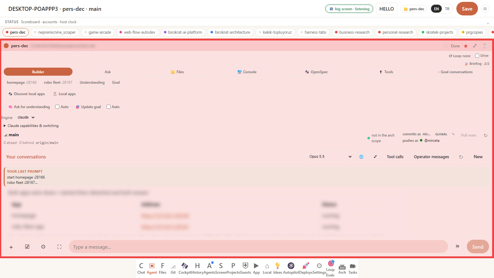
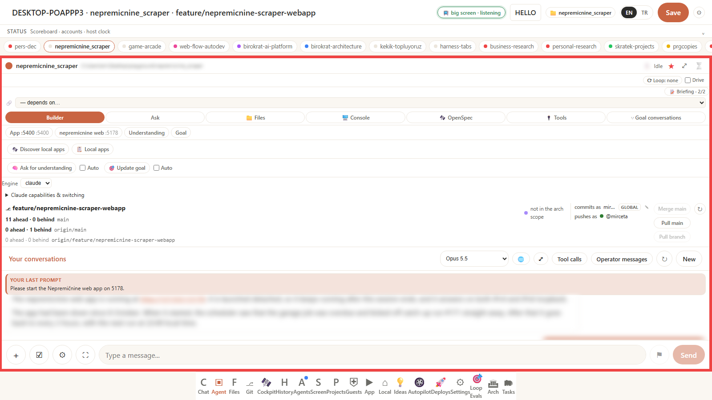
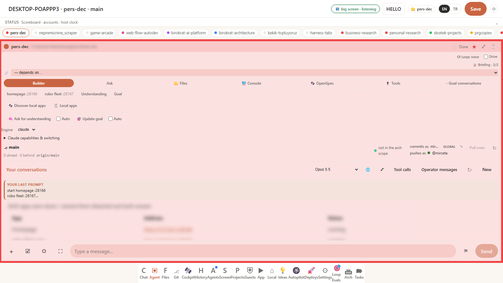
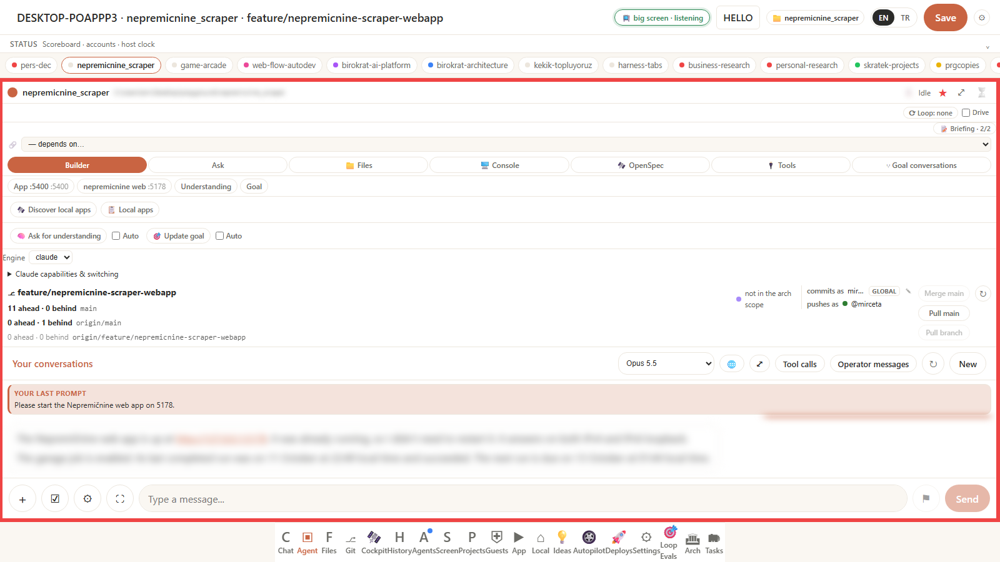

Tap agents on the "phone". Red flash = the agent reloads (transcript fetched, app frames reload). Left: before this change. Right: after.
Before one dock mounted
After kept docks, max 6
phone (Remote · Agents) ─ tap X ─► POST /api/remote/commands { open-agent, screenOn }
RemoteRelay.PlanCommand
├─ X here, screen here ─► open-agent ─► the Agent tab switches to X
│ NOW: X's dock stays mounted afterwards (hidden), so coming back is a switch
├─ X on peer P, screen on P ─► open-agent forwarded to P ◄── NEW (was: navigate + PIN + page load)
├─ X on peer P, screen elsewhere ─► navigate to P (other origin, other login) — unchanged
└─ X here, screen on a peer ─► navigate back here — unchanged
| piece | what it does |
|---|---|
agentKeepAlive.nextKept | most-recently-shown list, max 6; closed tabs dropped |
AgentView | passes the kept list to <Dashboard solo keep> |
Dashboard (solo) | renders every kept dock in stable order; only the shown one is visible |
PinnedAgent remoteActive | a hidden dock ignores unnamed lane / layout / push-app and doesn't report its layout |
Switching between machines still loads a page. The harness login cookie is SameSite=Strict: a peer harness's page can't stay logged in inside a frame on another harness's page. Loosening that isn't worth it.
The place to make machine-to-machine switches tab-like is the living-room presenter: one WebView2 per machine, shown or hidden. That's a follow-up in the living-room repo.
Kept docks cost what the Agent Dashboard wall costs per dock (chat state + polls). The cap of 6 bounds it.




Lab: isolated harness on :5303, commands sent through POST /api/remote/commands to a ?screen=projector page — 13/13.